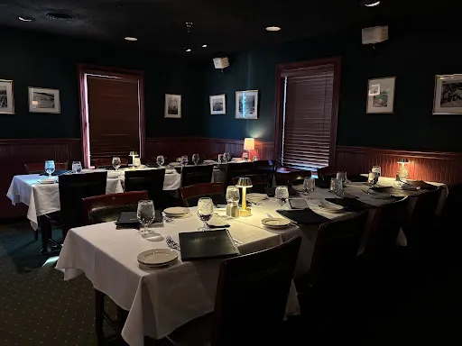
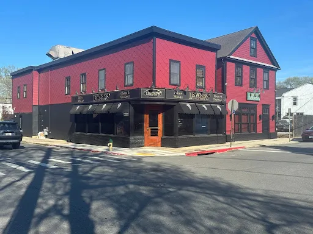

ANNAPOLIS
The Price of Access
Maryland utilities, other special interests spent thousands on private committee dinners with legislators who write their rules. Ratepayers, voters left out

BY RYAN J. ROSS, QUINN MULLER AND ZAKA HOSSAIN | MAY 18, 2026
ANNAPOLIS – At Lewnes’ Steakhouse one recent evening during Maryland’s 90-day legislative session, magnums of high-end wines waited uncorked in a private dining room with the blinds drawn.
As two Capital News Service reporters watched nearby, more than a dozen Maryland legislators headed up the stairs to a free, expensive meal courtesy of a prestigious lobbying firm whose clients have business before them.
The firm, Cornerstone Government Affairs, picked up the $9,275.11 tab for the April 8 dinner for members of the House Appropriations Committee and the Senate Budget and Taxation Committee, according to the Maryland State Ethics Commission records. Cornerstone declined to comment.
The lobbyist-funded dinner was far from an isolated get-together in Annapolis, according to hundreds of lobbying disclosures analyzed by Capital News Service.

The entrance to Lewnes’ Steakhouse in Annapolis, with the blinds drawn upstairs. (Ryan Ross/Capital News Service)
The analysis reveals that lobbyists hosted more than 200 closed-door dinners and private receptions for state lawmakers during the 2026 legislative session alone. Such events are permitted if either an entire committee or the General Assembly are invited.
CNS’s analysis encompassed the full 90-day legislative sessions in 2025 and 2026, along with the start and end weeks of the sessions, to incorporate events that take place within them.
Campaign donations and gifts are prohibited during the Maryland legislature’s 90-day session, which this year ran from Jan. 14 to April 13. Members and their supporters cannot hold fundraisers or sell tickets to future fundraisers while legislating in Annapolis.
But meals and receptions are a well-established practice dating back 30 years that many lawmakers view as an innocent perk – and that a few see as a loophole that gives monied interests an advantage over voters in the sausage-making legislative process.
Freshman Del. H. Kevin Anderson, a Republican and farmer who represents Somerset, Worcester and Wicomico counties, said the free dinners provide unfair access that his constituents can’t compete with. He doesn’t attend them.
“That’s not my cup of tea. That’s not who I’m here to represent,“ he told CNS. “I just had more valuable stuff for me at home than going out to dinner, a free dinner and drinks with people that were just trying to get my favor for their vote.”
A practice decades in the making
In 1999, special interests spent $684,958 on private receptions or committee dinners, according to the 1999 Ethics Commission’s annual report. The most recent data available shows spending on those gatherings rose to $2.3 million for the reporting year ending October 2025, according to a CNS analysis of the lobbying records.
The dinner loophole originated in 1997, when the General Assembly
Tables set up for the House Appropriations and the Senate Budget and Taxation committees at an upstairs suite at Lewnes’ Steakhouse on April 8, 2026. (Zaka Hossain/Capital News Service)
passed ethics reforms in the wake of several Maryland scandals. It banned one-on-one meals between donors or special interests and legislators but allowed meals or receptions for entire committees or the General Assembly. Soon, the price of such gatherings ballooned.
Legislators who attend these dinners are not required to report them on their annual financial disclosure statements.
Campaign contributions, corporate dinners
Leaving the Lewnes’ Steakhouse committee dinner in April, Del. Malcolm P. Ruff, D-Baltimore City, said he had just enjoyed a ribeye steak. He characterized the dinners as not a place to conduct business but “more of an opportunity to fellowship.”
But Ruff said he understands why some constituents might have questions about such private gatherings funded by special interests.
They “want to make sure that people feel comfortable with how legislators are moving… but I haven’t experienced lobbyists that are hosting committee dinners to be heavy-handed or pressuring,” Ruff said.
The dinners happen at upscale Annapolis restaurants like Ruth’s Chris Steak House and Acqua al 2, according to the legislative events calendars. At Ruth’s Chris, a 26-ounce “Cowboy Ribeye” costs $87.
Legislators who have attended the events say the dinners and receptions are a way for members and special interests to talk about proposed bills and other business, to ask questions, offer ideas and get to know each other.
Del. Marc Korman, D-Montgomery, chair of the House Environment and Transportation Committee, denied that business is discussed at the private dinners. He said members and lobbyists on most nights are “usually talking about your kids.”
“People eat dinner,” he said. “That’s what happens.”
Del. Joseph Vogel, D-Montgomery, who introduced a bill that would require dinners or receptions for legislators to be open to the public and all members of the General Assembly, said corporations would not spend so much money to just discuss legislators’ families.
“I have never met a business person, let alone a CEO or a corporate executive, who likes to waste money,” Vogel said. “And if they are spending millions and millions of dollars each year on lobbying, dinners and political contributions, there has to be, in their eyes, some positive return on investment.”
Since the end of the 2025 session and the end of the 2026 session, almost half of the General Assembly members accepted campaign contributions from major utility companies. Many members on the two committees with primary jurisdiction over utilities also accepted contributions from major utility companies — seven of the 11 members on the Senate Education, Energy, and the Environment Committee and 10 of the 20 members on the House Environment and Transportation Committee, according to board of elections records.
‘Trying to keep the lights on’
Utility companies that do business in Maryland have reported spending a total of $60,638 on committee and General Assembly dinners and receptions during the 2026 legislative session. The spending came while these same bodies were deliberating policies that affect the companies’ profits and consumers’ bills, according to the CNS analysis.
Much of the legislative session was spent discussing skyrocketing consumer energy costs. The increases are the result of many factors: a surge in the cost of delivering energy to households and businesses, extreme weather, soaring data center demand and the cost of updating critical infrastructure, among others, according to the Office of People’s Counsel.
The General Assembly responded by passing the Utility RELIEF Act, backed by Gov. Wes Moore and leaders in both chambers. It is expected to save each household about $150 a year, the administration says.
Anderson voted against the bill because, he said, it didn’t help ratepayers enough. He said the $150 annually – or $12.50 a month – was “a slap in the face.”
Banning big money from utilities
Vogel, 29, who works at a non-profit that advocates building play spaces in disadvantaged neighborhoods and who was one of the first elected Gen Z lawmakers, has become a crusader in his effort to change the three-decade-long dinner tradition.
Besides the bill banning private meals or receptions, Vogel proposed a second bill that prohibits gas and electric utilities from donating to the campaigns of state and local candidates. Both bills stalled in committee.
Bruce Bereano, an Annapolis lobbyist who earned $1.9 million representing clients including Washington Gas during the 2025 session, according to Ethics Commission records, said Vogel’s anti-dinner bill “pisses me off” and is “a waste of paper and ink.”
Del. Joe Vogel, D-Montgomery, in his Lowe House Office Building in Annapolis. (Zaka Hossain/Capital News Service)
The dinners “are a relaxed, private way for members of a company, group, institution … to break bread and get to know legislators,” he said.
Bereano said legislators don’t need protection from corporate money. “All the legislators are adults,” he said. “They can decide who they want to take contributions from, and who they don’t. They don’t have to be told.”
Vogel’s response: “He makes a million dollars a year. My constituents are just trying to keep the lights on.”
Vogel’s effort to reform committee dinners and ban utility contributions has drawn teasing from his colleagues. He said the jokes show a deeper discomfort among some legislators about whether the current practices are appropriate or not.
Bruce Bereano has worked in politics or lobbying in Annapolis for 50 years (Wesley Lapointe)
Others share Vogel’s concerns.
“Is it fair to the small business guy that can’t afford a $5,000 dinner that wants to compete with them?” said Anderson, the farmer. “You know, they have lobbyists that walk this hall all session, so they’re represented almost, if not daily, at least weekly, there’s somebody that comes by this office … it’s just the small guy not getting an equal shake.”
Bereano’s response to the fairness argument?: “Life is unfair in all regards. Some people are born blind … some people develop cancer.”
METHODOLOGY:
The original dataset comes from the Maryland State Board of Elections’ Campaign Reporting Information System. Capital News Service assessed all of the campaign contributions with a transaction date between April 8, 2025 (the day after Sine Die 2025) and April 13, 2026 (Sine Die 2026). This was cross-referenced with information from the Maryland General Assembly website to see which legislators accepted campaign contributions and their respective committees.
The data for event reports comes from the Maryland State Ethics Commission’s Lobbying Registrations database. Under Maryland law, regulated lobbyists who host a dinner or reception for a qualified legislative group — defined as all members of the General Assembly, either chamber, any standing committee or a recognized county or regional delegation — must file an expenditure report with the commission within 14 days of the event. If final costs are not yet known, lobbyists may estimate and amend later. Capital News Service analyzed all event reports filed for the 2025 and 2026 regular sessions of the Maryland General Assembly. To account for events hosted in the days immediately surrounding each session, CNS included reports from the week of Jan. 6 through the week of April 11, 2025, and from the week of Jan. 12 through the week of April 17, 2026. Data for the 2025–2026 reporting year was retrieved April 27, 2026.